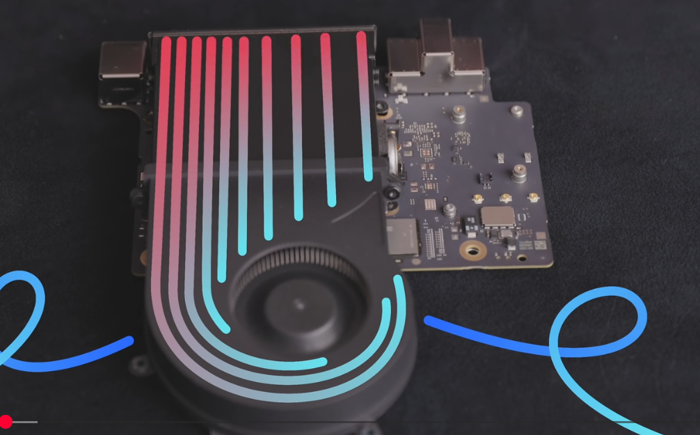
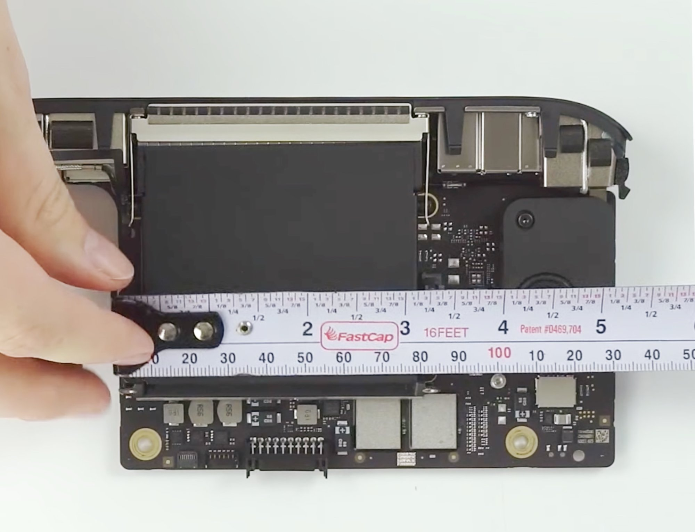
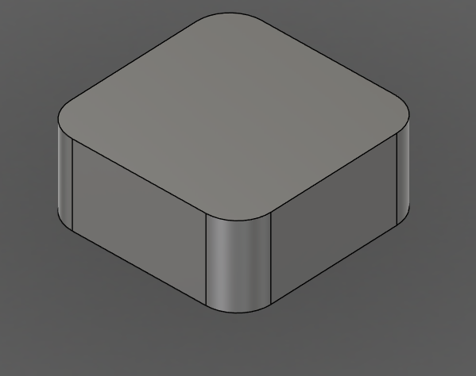
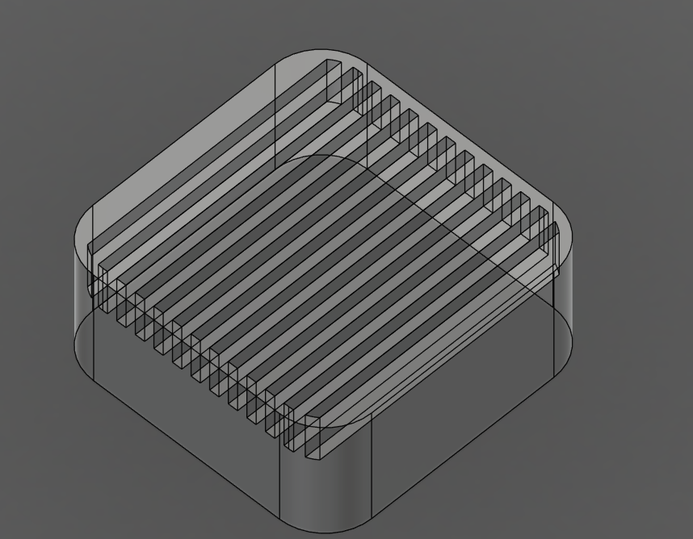
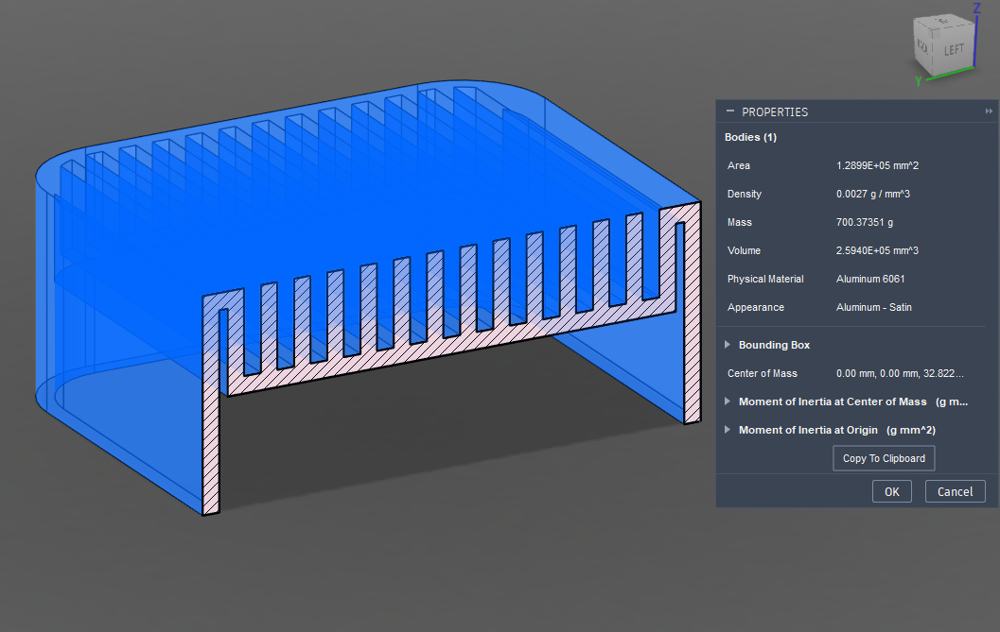
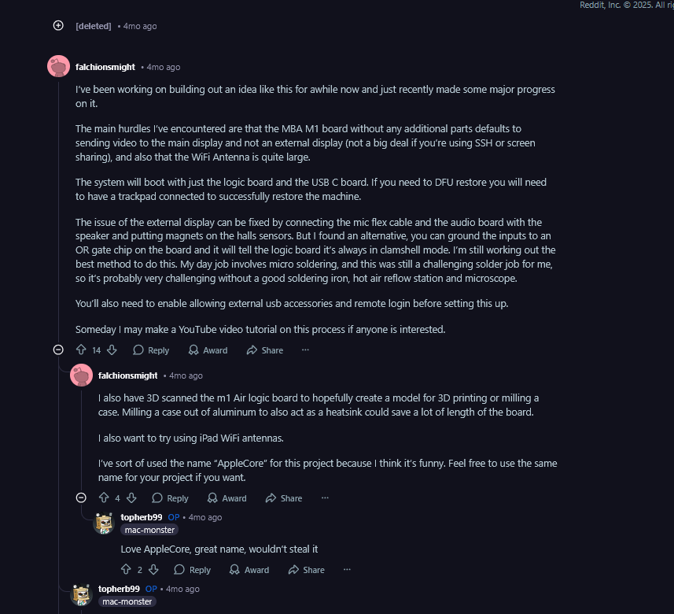
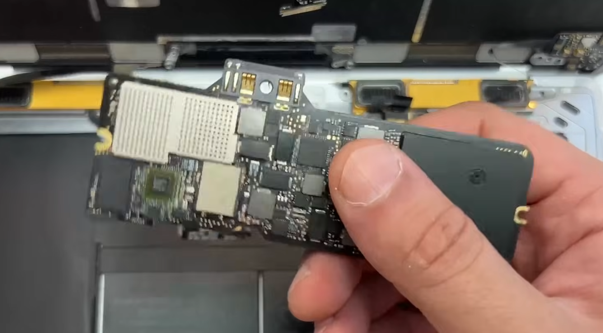
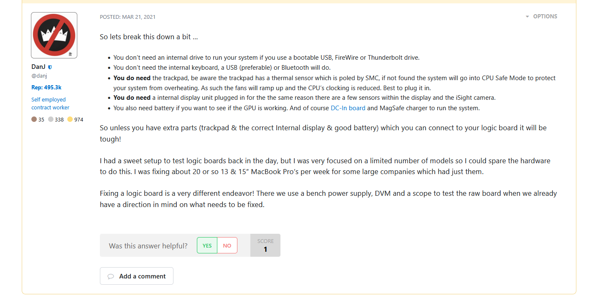
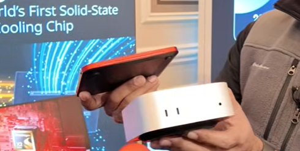
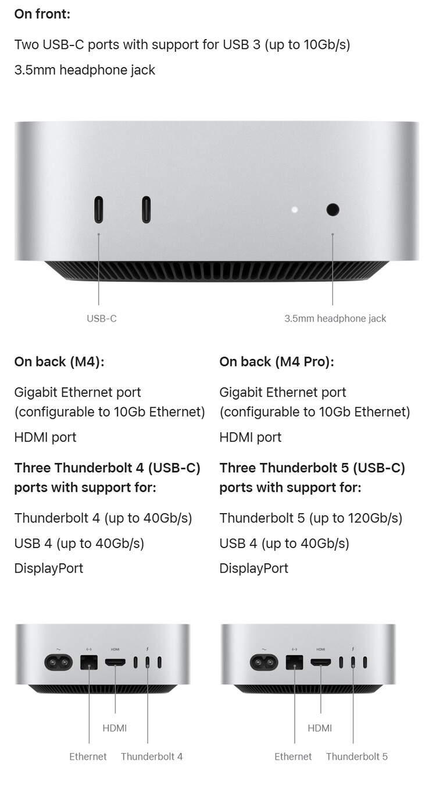

Projects
💻Cyberdeck small modular pc
There are notes on the mini projects page on miro (link)

- There are notes on the mini projects page on miro (link)
PREVIEW

image.png - Could use a macmini for it
🔵Questions
- What is MESA
- Full software-rendering cross-platform implementation of OpenGL that is open source
- Do older macminis have smaller PCB’S?
IMAGES
‣

image.png 
m1 dimensions.jpg - how much aluminum surface area would you need dissapate 60W
answer
You’re missing a parameter: temperature rise and airflow. I’ll assume:
- Natural convection in still air
- Acceptable heatsink temperature ≈ 60 °C at 20 °C ambient → ΔT ≈ 40 K
Use:
So: ≈ 0.15 m² of exposed aluminum surface
= 1500 cm² total (both sides of fins/plate count).
If you only allow ΔT ≈ 20 K, you’re closer to 0.3 m² (3000 cm²).
With a fan (forced convection, h ≈ 50–80 W/m²K), you can get away with roughly 0.02–0.05 m² (200–500 cm²).
- To keep at 20 degree difference (20 degree ambient) (keep at max 40 degrees) you’d need 3000 cm²
- At 20 degree ambient
- to keep at 40 degrees max 3000 cm²
- to keep at 60 degree max 1500 cm²
- Macmini by default has 52800.00 mm^2 surface area (528 cm²) which is not enough for passive cooling

image.png - With forced convection (a fan) you could get away with 3-5x less surface area

image.png - this has 1103.8 cm2 pretty close
- But it does weigh a decent bit

image.png - at 1.5mm thick it could get down to 400 gr
🟢 TO-DO
- Make a lo-fi physical prototype of different layouts and usecases
Resources examples
- Similar solution-idea
‣

image.png - MACBOOK in a jar

image.png - ‣

image.png
🟡 Ideas
- you could 3d print an aluminum case which also has insanely large gyroid type surface area so that it can easily cool it.
- For extra performance when at home it could be easily actively cooled with a fan
- Could use solid state fans
🟣Resources-Bookmarks
- ⭐IPAD only with Macmini ‣
- Yam display app
- On mac mini yan display downlload client
- Open Yam display app
- cool dock for phones ‣
- Cool mini pc and cyberdeck systems
- ‣
- ‣
- ‣
- ‣
Image compared against a mac mini

image.png
- Linux on arm android devices
- ‣
🟠Notes
- Could utilize a apple trackpad (that works great)
- 🗓️Apple trackpad on windows
- Reddit Thread on the subject: Reddit - The heart of the internet
- Apperently these drivers on github work well: GitHub - imbushuo/mac-precision-touchpad: Windows Precision Touchpad Driver Implementation for Apple MacBook / Magic Trackpad
- All gestures work
- Something that works even better than the Imbushuo drivers are the official windows precision drivers that Apple uses for Bootcamp
- Apperently these drivers on github work well: GitHub - imbushuo/mac-precision-touchpad: Windows Precision Touchpad Driver Implementation for Apple MacBook / Magic Trackpad
- Feature list of mac trackpad: https://previous.magicutilities.net/magic-trackpad-2/help/touch-support
- Reddit Thread on the subject: Reddit - The heart of the internet
- 🗓️Apple trackpad on windows
- x86 based mini PC’s
- ‣
- M4 seems to be a great choice
- Turning chrome box into a pc
- ‣
- video
- he installs proxmox (can handle it but downloads suck, if you have eee enabled)
- jellyfin (for media)
- AcerXCI3
- ‣
- can book into any UEFI compatible operating system
- idles at 2.5Watts
- mooonlight works 4k not great
- video
- ‣
- 🚀Windows software on linux and arm
- Steam coming to all devices
- ‣
- Explained ‣
- Proton (windows on linux) (open-source) (based on wine)
- FEX Emu binary translator (x86 to ARM64) (open-source)
- doesn’t touch directX or vulcan for GPU instructions
- designed for correctness (no random crashes)
- Lepton (run android on anything)
- based on wavedroid (android apps to run on ARM linux)
- What is replaced with what (austin evans youtube)
- windows ➡️ steamOS
- Windows API ➡️ Proton (wine)
- DirectX ➡️ DXVK/VKD3D (GPU)
- (there was no directX for linux)
- Prop. Drivers ➡️ Mesa (open-source) drivers
- x86 CPU architecture ➡️ ARM (FEX for x86 to ARM) (CPU)
- What about linux on apple hardware
- ‣
- Asahi Linux comes to apple silicon
- GPu and neural engine currently don’t work
- ‣
- seems to work pretty well
- ‣
- Waydroid can be used to run native android apps
- ‣
- Waydroid can be used to run native android apps
- codeweavers crossover
- rosetta 2
- What is replaced with what
- Operating System: Windows → SteamOS / Asahi Linux
- Software Layer: Windows API → Proton (Wine)
- Graphics API: DirectX → DXVK / VKD3D (running on Vulkan)
- Hardware Drivers: Proprietary → Mesa (Open-Source)
- CPU Architecture: x86 (Intel/AMD) → ARM64 (via FEX-Emu translation)
- Android Apps: Native Android → Lepton (based on Waydroid)
- Asahi Linux comes to apple silicon
- ‣
- ‣ Windows on linux-arm
- ‣ (for android phones)
- they might be stealing code
- from moonlight, winlator, proton
- Games tested on the gamehub
- ‣ (this is the original project?)
- ‣
- How does gamehub work?
- they might be stealing code
- Winlator ‣
- Android application that lets you to run Windows (x86_64) applications with Wine and Box86/Box64.
- proton10.0-arm64x-2
- Get base memory and get a 1-2TB upgrade stick
- ‣
- pro or non pro
My M4 Pro (14cpu/20gpu) power draw
- Idles at about 10W without external drive connected. (external USB4 NVMe SSD adds ~6-7W)
- It fluctuates between ~11-15W with a YouTube video playing.
- ~60W when playing inFamous through RPCS3.
- When running Cinebench 2024, I saw it touch ~80W.
Consumption is pretty much the same, except the max power. The maximum is higher on the Pro. Usually the maximum is only used for a few seconds, except when rendering or compiling.
base M4 pro.
m4 pro has 3 thunderbolt 5(up to 120Gb/s) while m4 has 3 thunderbolt 4 (upto 40Gb/s)

csm_mac-mini-launch-new_f99bef2af5.jpg - You could sell the parts you remove to get some of your money back
- You can get the EDU discount
- Turning chrome box into a pc
- Periferals
- Example
- ‣
- Keyboard
- Combine it with a Apple Magic Keyboard
- Display
- Something 120 hz maybe? 2k resolution
- IPAD on a whim
- Could you use touchscreen/wacom type tablet?
- ‣
- 2K Arzopa model
- there are high refresh rate, and also high resolution options
- DIY screenn from a laptop screen (could use nice display)
- ‣
- LG Gram (link)
- Double display
- ‣
- Mouse-interface
- Alternative input device
- Example
- What is MESA
‣
‣